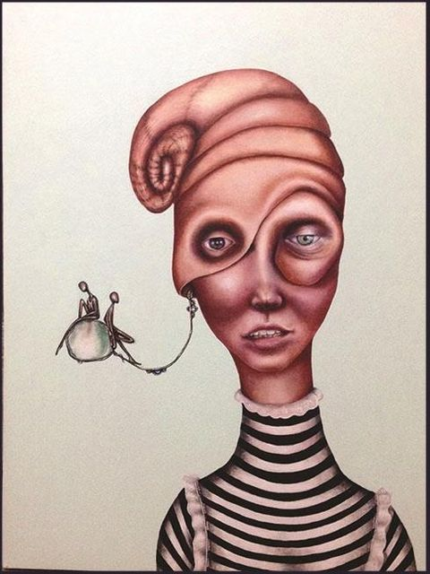
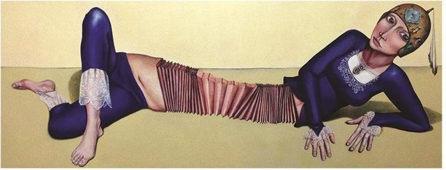
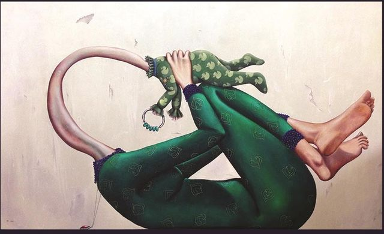
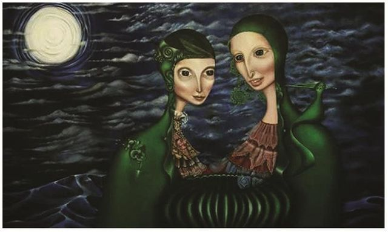
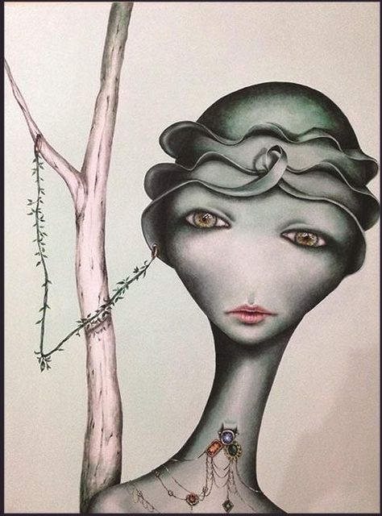

Works6 artworks











History of experienceBiography · education · exhibitions · awards
Biography
Sara Ashrafi lives and works in Tehran – Iran, Her interest in the visual arts begins very early. Mainly self-taught, she participates in professional development workshops when she was 13 years old and worked as a Cartoonist for Iranian famous Magazines at the age of 19, later she enter University of graphic Azad university and obtains a Bachelor of Arts with First Class Honors.
She is invited to prestigious symposium and exhibitions, in particular Tehran – Iran and Italy, Bratislava-Slovakia, Colombo-Sirilanaka, Hudson-New York, sion-switzeland, Iravan-armenia . Her works are part of many public and private collections in Iran, and Europe.
She is a member of the coalition of artists in visual arts of Iran, and the Institute of Representative Arts She has been published since 2006, in the Biennial Directory of Iranian artists in galleries of Khaneh Honarmandan,tareh-no, An article on her work appeared in the journal Magazin'art spring 2011.
Awards and achievements
- 2002Bachelor of Arts, Graphic|Azad university|Iran
- —Member of Iranian painters (SIP)
- —Honorary Member of painting field
Solo exhibitions
- 2016Galerie de la treille|Sion - switzeland
- 2014Nar gallery|Tehran – Iran
- 2014Negah gallery|Tehran – Iran
- 2002Tarhe-no gallery|Tehran – Iran
Group exhibition
- 2016Second sale Iranian contemporary artists
- 2016Staying iranians art|Iravan-armenia
- 20168th FADJR international festival of visual arts
- 2015Limner gallery|Hudson - New York
- 2015Ace gallery|Tehran – Iran
- 2015khaneh honarmandan|Tehran – Iran
- 2014Lattuada studio|Milan -Italy
- 2014Art gallery|Bratislava - Slovakia
- 2013Art biennial Colombo|Sirilanka
Source: the Sobhan Gallery artist catalogue “Sobhan Gallery. C. Sara Ashrafi.pdf”.